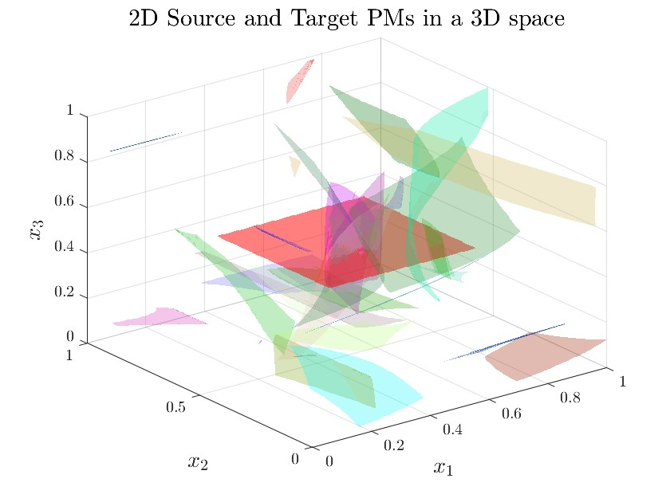
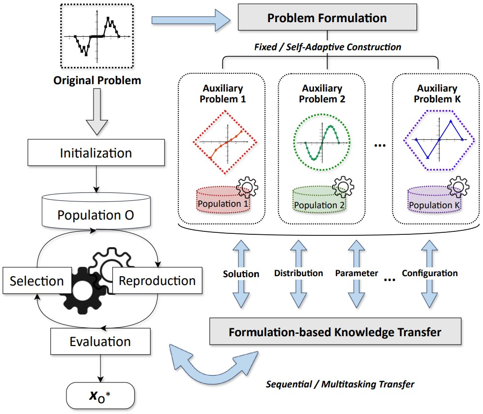

|
Xiaoming Xue (薛小明) I received the B.Sc. and M.A. degrees from China University of Petroleum (East China) under the supervision of Prof. Kai Zhang, and the Ph.D. degree from City University of Hong Kong under the supervision of Prof. Kay Chen Tan and Prof. Linqi Song. My research interests include evolutionary transfer optimization, expensive optimization and their applications in real-world scenarios. Email / Google Scholar / Github / CV |
ResearchI'm interested in computer vision, deep learning, generative AI, and image processing. Most of my research is about inferring the physical world (shape, motion, color, light, etc) from images, usually with radiance fields. Some papers are highlighted. |
Preprints |
|
Surrogate-Assisted Search with Competitive Knowledge Transfer for Expensive Optimization
Xiaoming Xue, Yao Hu, Liang Feng, Kai Zhang, Linqi Song, Kay Chen Tan paper / code |
|
A Scalable Test Problem Generator for Sequential Transfer Optimization
Xiaoming Xue, Cuie Yang, Liang Feng, Kai Zhang, Linqi Song, Kay Chen Tan paper / code |
Selected Publications(*: corresponding author, full list: Google Scholar) |
|

|
Multiobjective Sequential Transfer Optimization: Benchmark Problems and Preliminary Results
Xiaoming Xue, Liang Feng, Cuie Yang, Songbai Liu, Linqi Song, Kay Chen Tan IEEE Congress on Evolutionary Computation (CEC), 2024 paper / code In the case of simply connected Pareto manifolds (PM), the universal representation of source-target PM similarities is achieved through a bottom-up approach based on homeomorphisms, allowing for a close resemblance to the diverse PM similarities found in real-world multiobjective sequential transfer optimization problems. |
|

|
A Review on Evolutionary Multiform Transfer Optimization
Yinglan Feng, Liang Feng, Xiaoming Xue, Sam Kwong, Kay Chen Tan IEEE Congress on Evolutionary Computation (CEC), 2024 paper A comprehensive survey of evolutionary multiform transfer optimization is conducted from the perspectives of the problems being solved and the methods used to construct auxiliary formulations. |
Selected Publications(*: corresponding author, full list: Google Scholar) |
|
Global and Local Search Experience-Based Evolutionary Sequential Transfer Optimization
Chenming Cao, Kai Zhang*, Xiaoming Xue*, Kay Chen Tan, Jian Wang, Liming Zhang, Piyang Liu, Xia Yan IEEE Transactions on Evolutionary Computation (TEVC), 2024 paper / code |
|
Competitive Knowledge Transfer–Enhanced Surrogate-Assisted Search for Production Optimization
Chenming Cao, Xiaoming Xue*, Kai Zhang*, Linqi Song, Liming Zhang, Xia Yan, Yongfei Yang, Jun Yao, Wensheng Zhou, Chen Liu SPE Journal (SPE J), 2024 paper / code |
|
Source Free Semi-Supervised Transfer Learning for Diagnosis of Mental Disorders on fMRI Scans
Yao Hu, Zhi-An Huang, Rui Liu, Xiaoming Xue, Xiaoyan Sun, Linqi Song, Kay Chen Tan IEEE Transactions on Pattern Analysis and Machine Intelligence (TPAMI), 2023 paper |
|
Solution Transfer in Evolutionary Optimization: An Empirical Study on Sequential Transfer
Xiaoming Xue, Cuie Yang*, Liang Feng*, Kai Zhang, Linqi Song*, Kay Chen Tan IEEE Transactions on Evolutionary Computation (TEVC), 2023 paper / code |
|
Historical Window-Enhanced Transfer Gaussian Process for Production Optimization
Chao Zhong, Kai Zhang*, Xiaoming Xue, Ji Qi, Liming Zhang, Xia Yan, Huaqing Zhang, Yongfei Yang SPE Journal (SPE J), 2022 paper |
|
A Divide-and-Conquer Optimization Paradigm for Waterflooding Production Optimization
Xiaoming Xue, Guodong Chen, Kai Zhang*, Liming Zhang, Xinggang Zhao, Linqi Song, Menghan Wang, Peng Wang Journal of Petroleum Science and Engineering (JPSE), 2022 paper |
|
Self-Adaptive Multifactorial Evolutionary Algorithm for Multitasking Production Optimization
Jun Yao, Yandong Nie, Zihao Zhao, Xiaoming Xue, Kai Zhang, Chuanjin Yao, Liming Zhang, Jian Wang, Yongfei Yang Journal of Petroleum Science and Engineering (JPSE), 2021 paper |
|
Evolutionary Sequential Transfer Optimization for Objective-Heterogeneous Problems
Xiaoming Xue, Cuie Yang*, Yao Hu, Kai Zhang, Yiu-Ming Cheung, Linqi Song*, Kay Chen Tan IEEE Transactions on Evolutionary Computation (TEVC), 2021 paper |
|
Multifidelity Genetic Transfer: An Efficient Framework for Production Optimization
Faliang Yin, Xiaoming Xue, Chengze Zhang, Kai Zhang*, Jianfa Han, BingXuan Liu, Jian Wang, Jun Yao SPE Journal (SPE J), 2021 paper |
|
Affine Transformation-Enhanced Multifactorial Optimization for Heterogeneous Problems
Xiaoming Xue, Kai Zhang*, Kay Chen Tan, Liang Feng, Jian Wang, Guodong Chen, Xinggang Zhao, Liming Zhang, Jun Yao IEEE Transactions on Cybernetics (TCYB), 2020 paper / code |
|
A Topology-Based Single-Pool Decomposition Framework for Large-Scale Global Optimization
Xiaoming Xue, Kai Zhang*, Rupeng Li, Liming Zhang, Chuanjin Yao, Jian Wang, Jun Yao Applied Soft Computing (ASOC), 2020 paper / code |
|
Global and Local Surrogate-Model-Assisted Differential Evolution for Waterflooding Production Optimization
Guodong Chen, Kai Zhang*, Liming Zhang, Xiaoming Xue, Dezhuang Ji, Chuanjin Yao, Jun Yao, Yongfei Yang SPE Journal (SPE J), 2020 paper |
Miscellanea |


{kind=link}
|
Feel free to steal this website's source code. Do not scrape the HTML from this page itself, as it includes analytics tags that you do not want on your own website — use the github code instead. Also, consider using Leonid Keselman's Jekyll fork of this page. |